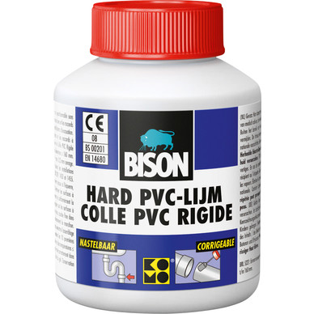

Mechanica — Doel 7: Lijmen & woordenschat
← Terug naar oefenthema
Start oefenen
Vraag 1 van 10

Controleer
Volgende vraag →
Doel voltooid!
Je behaalde
0
XP.
← Terug naar oefenthema
Terug naar hoofdthema